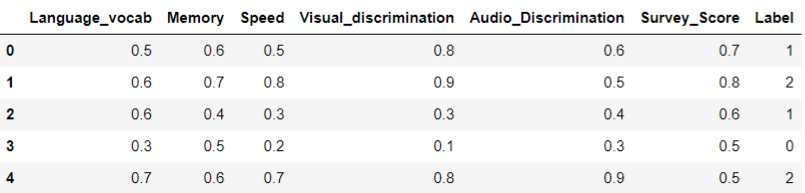

Introduction to Dataset
In this project, we are making predictions using Machine Learning, on the basis of quiz scores of a person to
see whether they have Dyslexia. In our dataset, we have the columns 'Language_vocab', 'Memory', 'Speed',
'Visual_discrimination', 'Audio_Discrimination', 'Survey_Score' and 'Label'. Every applicant is required to take
a quiz which has different questions to test language vocabulary, memory, speed, visual discrimination and audio
discrimination. On the basis of their answers of these questions, points for each section are calculated and put
into the first five columns of the dataset, respectively. Another survey is also conducted on the basis of which
'Survey_Score' is calculated. These scores are analysed to get the value of 'Label', which ranges from 0 to 2.
The values 0, 1 and 2 mean that the chances of the applicant having dyslexia are low, moderate and high,
respectively.
